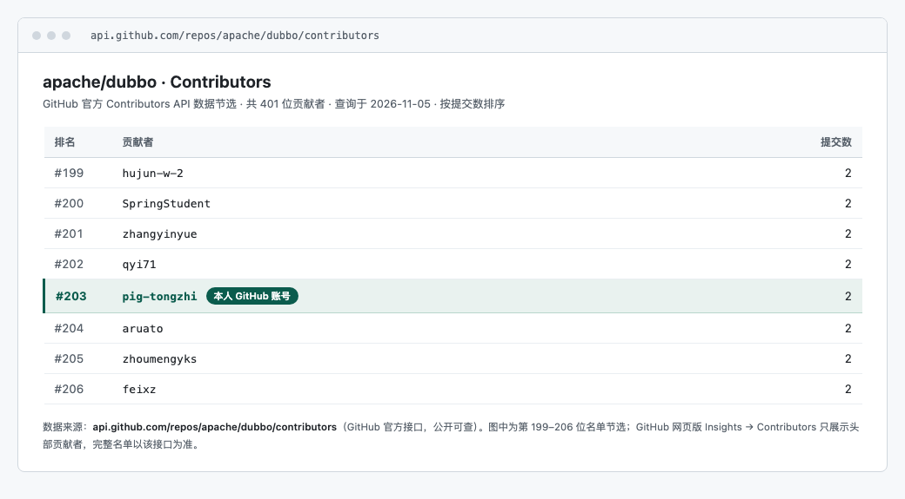

简历里塞不下的东西放这页：能直接点开的线上系统、能翻的公开源码、自己搭的系统与工程文档、合并进 Apache 项目的开源提交。没有效果图，也没有「参与过」——写出来的都是实际做过的。
这几个是部署在公网上的真实系统，不是截图。链接均于 2026-11-05 实测返回 200。
单文件网页，训练一分钟即兴表达。题库 666 题 + 深度研究 80 题，手机适配、可离线使用。同时部署在腾讯云与 GitHub Pages。
项目名称、职责与数字按 2026-11 最新版简历整理。工作项目的代码在内网或私有仓库，这里只做说明；能公开的源码和线上系统在 01、04 两节。
向 Apache 开源项目提交的改动中，有 4 笔已合并，覆盖 3 个仓库。贡献者身份见下方名单。
| 仓库 | 合并笔数 | 状态 |
|---|---|---|
| apache/dubbo | 2 笔 | MERGED |
| apache/seatunnel | 1 笔 | MERGED |
| apache/shenyu | 1 笔 | MERGED |

只列自己写的，学习和参考用的 fork 不放在这里。下面两套自建系统的仓库是私有的，所以只做说明、不放链接。
三个服务协同编排：每日股票分析系统 + RSS/Atom 与 JSON 两路资讯转换，资讯注入 LLM 上下文；定时选股 → 研判链 → 日报 → 回测全链路，配套执行监控页、日报长图导出与云端快照回传。技术栈 Python / FastAPI / SQLite / Node 22。
用自托管 Memos 搭的「中转站」：手机写 #指令，SSE 实时监听 + 定时拉取双通道、30 秒状态机派发给常驻 Agent、结果以评论回写手机，形成闭环；云机 systemd 与本机 launchd 编排。项目内沉淀 PRD、交接、验收与部署清单等工程文档（含《中转站流水线交接文档》）。
前两组与最新简历一致，第三组是自己做的公开项目里用到的。
后端 / 中间件
AI 应用
自己做的公开项目